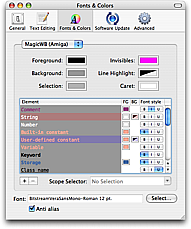
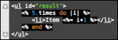

14 Themes
TextMate uses language grammars to assign names to document elements such as strings, comments, keywords and similar. It is possible to specify particular elements using scope selectors in the same way that you can use CSS selectors to select HTML elements.
Styling a document in TextMate is similar to creating a style sheet for an HTML document. The process happens in Preferences → Fonts & Colors where one can select a theme (analogous to a style sheet), edit one of the themes or create new themes.

Changing theme is global i.e. it is currently not possible to select a specific theme per file or file type.
A theme has six standard properties, these are the background, foreground, caret, selection, invisibles and line highlight color. In addition to that the theme consists of a list of “theme items”. Each of these items has a scope selector to select what element(s) the item should apply to and then optionally a foreground and background color and a font style (bold, italic and underline).

If a theme item currently has no foreground or background color, you can click the FG or BG column to add one. If instead you want to remove it, drag away the color well shown in the FG or BG column until the disappearing mouse pointer shows and then release the mouse to have the color removed.
Remember that scope selectors can be complex, so it is possible to set the background for text.html source.ruby so that Ruby blocks in HTML gets a particular color for example or use string - string source to style only the part of a string which is not embedded code.

14.1 Sharing
The TextMate wiki has a page for custom themes where users are encouraged to share their themes.